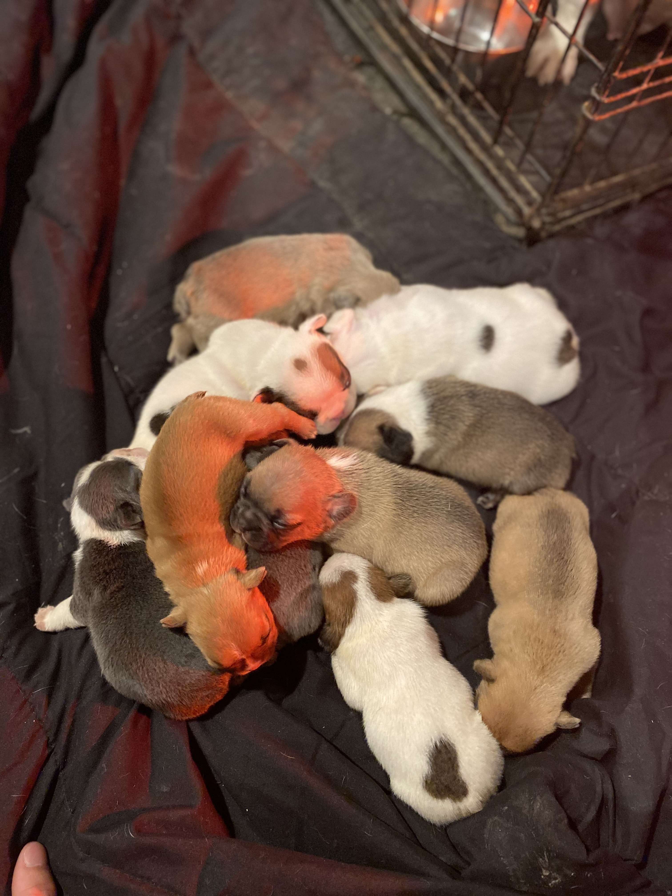

About Us & Contact

About Pawsome Pet Rescue
Pawsome Pet Rescue has been helping abandoned and stray animals for 4 years. We have an amazing team that is dedicated through the workweeks.
Contact Information
Email: pawsomepet@rescue.org
Phone: 410-435-233
Location: Baltimore, Maryland
Owners
Dan Walker, is the founder and owner of Pawsome Pet Rescue. Dan grew up with family who had shelters always helping animals ever since a kid. He also owns many animals himself. He loves and takes care of the animals and his staff. He is very proud to have his very own shelter now to continue his help for all the animals.